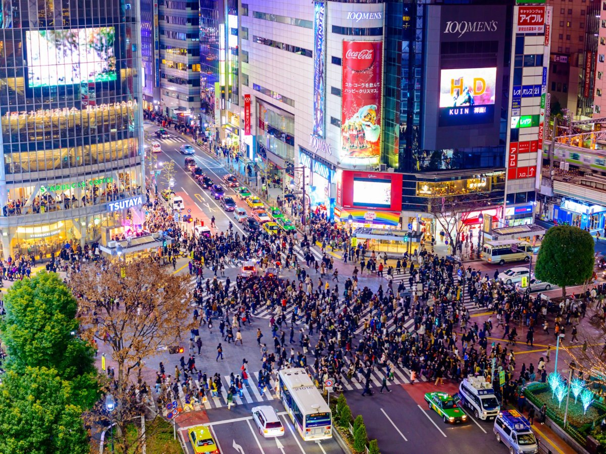
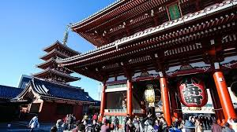

<!DOCTYPE html>
<html lang="hr">
</html>
<header>
    <div class="overlay">
    <meta charset="UTF-8">
    <title>Welcome to Tokyo</title>
    <link rel="stylesheet" href="shinegugu.css">
        
    </header>
    <head>
        <h1>Dobrodošli u Tokyo</h1>
        <p>Urbani glavni grad Japana</p>
        <style>
            h1{text-align: center;}
            p{text-align: center;}
        </style>
    </div>
    </head>
    <br>
    <br>
<body>
    <section class="about">
        <h2>O Tokyu</h2>
        <p>
            <i>Tokyo (japanski: 東京, engleski: Tokyo), bivši Edo, službeno Tokijska metropola, glavni je i najveći grad Japana. 
            <br>
            Njegovo metropolitansko područje najnaseljenije je na svijetu, s procijenjenih 37,468 milijuna stanovnika 2018. godine. 
            <br>
            Njegovo gradsko područje najveće je po veličini i najnaseljenije, s površinom od 13 452 četvorna kilometra, a sam grad ima populaciju od 13,99 milijuna ljudi. 
            <br>
            Tokio je političko i gospodarsko središte zemlje, kao i sjedište japanskog cara i nacionalne vlade.</i>
        </p>
    </section>

    <section class="attractions">
        <h2>Top Attractions in Tokyo</h2>
        <div class="grid">
            <div class="card">
                
                <h3>Tokyo Tower</h3>
                <p>An iconic symbol of Japan, Tokyo Tower offers breathtaking views of the city.</p>
            </div>
            <div class="card">
                
                <h3>Shibuya Crossing</h3>
                <p>The busiest pedestrian crossing in the world, a symbol of Tokyo’s energy.</p>
            </div>
            <div class="card">
                
                <h3>Sensoji Temple</h3>
                <p>A historic Buddhist temple in Asakusa, Tokyo's oldest and most significant temple.</p>
            </div>
        </div>
    </section>
</body>
	<footer>
    <div class="footer-nav">
        <ul>
            <li><a href="#o-nama">O nama</a></li>
            <li><a href="#kontakt">Kontakt</a></li>
            <li><a href="#politika-privatnosti">Politika privatnosti</a></li>
            <li><a href="#uvjeti-korištenja">Uvjeti korištenja</a></li>
        </ul>
    </div>
</footer>

<style>
    footer {
        background-color: #f8f8f8;
        padding: 20px;
        text-align: center;
    }
    .footer-nav ul {
        list-style: none;
    }
    .footer-nav li {
        display: inline;
    }
    .footer-nav a {
        text-decoration: none;
        color: #333;
    }
    .footer-nav a:hover {
        text-decoration: underline;
    }
</style>

        <p>&copy; 2024 Discover Tokyo. All Rights Reserved.</p>
    </footer>
</body>
</html>